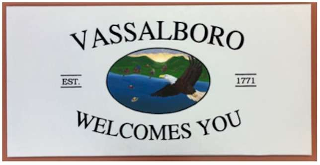

In the far northeast corner of the country, is the state of Maine. Located between Augusta and Waterville, is the town of Vassalboro. Travel on route 32, either northbound from South China, or southbound from Winslow, and you will find the town itself, sitting right off the western end of China Lake.
My wife (originally from Waterville) brought me here from Kansas, after she graduated from college. We bought a house of the Cross Hill Road in early 2024, and have lived here ever since. While the move was at first a bit of a culture shock for me, I have grown to love it here more and more every day.
Here you will find photos I've taken of both Vassalboro, and the rest of Maine, along with historical photos of Vassalboro that connect with me the most.
Hover over or tap on each photo to get its description, location and date taken.
Vassalboro Today
My pictures of Vassalboro
Vassalboro Yesterday
Historical photos of Vassalboro
All of Maine
My pictures of the rest of Maine